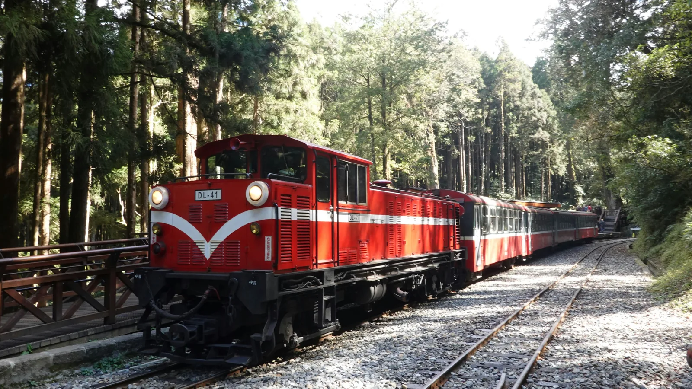

Taiwan Food Map
골목 하나까지 다 아는
골목 하나까지 다 아는
나만의 대만 맛집 지도
현지인만 아는 골목 식당부터 최신 유행 디저트까지 — 한국인 여행자와 거주자가 직접 찾고 검증한 대만 맛집을 지도 위에서 만나보세요.
31카테고리
2지원 언어
100%여행자 검증
What to eat
전체 화면 지도로 보기 →
무엇을 먹어볼까요?
31가지 카테고리를 골라서 지도 위 맛집을 바로 확인하세요. 핀을 눌러 추천 투표도 남길 수 있어요.
Explore by region
지역별 탐험
대만은 지역마다 다른 매력의 로컬 푸드가 있어요. 여행 동선에 맞춰 골라보세요.
미식의 성지
 항구 도시의 활기
버블티의 고향
옛 수도의 손맛
항구 도시의 활기
버블티의 고향
옛 수도의 손맛
 타이로거 맛집 탐험
뤄동 야시장 & 온천
예류·스펀 북동부 해안 탐험
열기구와 슬로우 라이프
타이로거 맛집 탐험
뤄동 야시장 & 온천
예류·스펀 북동부 해안 탐험
열기구와 슬로우 라이프
타이베이
노포부터 미쉐린까지, 대만 미식이 다 모이는 수도
항구 도시의 활기
가오슝
리우허 야시장과 항구의 정취가 어우러진 화끈한 남부 미식
타이중
여유로운 카페와 디저트의 도시
타이난
대만 미식의 뿌리
타이로거 맛집 탐험
화롄
가장 화려한 미식의 도시
이란
대파 향 가득한 로컬 맛의 도시
타이베이 근교 (예류·스펀·스펀폭포·진과스·지우펀)
기암괴석 해안부터 붉은 등불 골목까지
타이동
동부 해안의 여유로운 초록빛 고원

구름 위 일출과 삼림열차아리산/일월담
아리산과 일월담을 잇는 고산 여행지
Join the map
지금 등록하기 →
나만의 맛집을 공유해주세요 🤫
여러분의 발견이 다른 여행자들에게 진짜 대만을 경험하게 해줍니다.